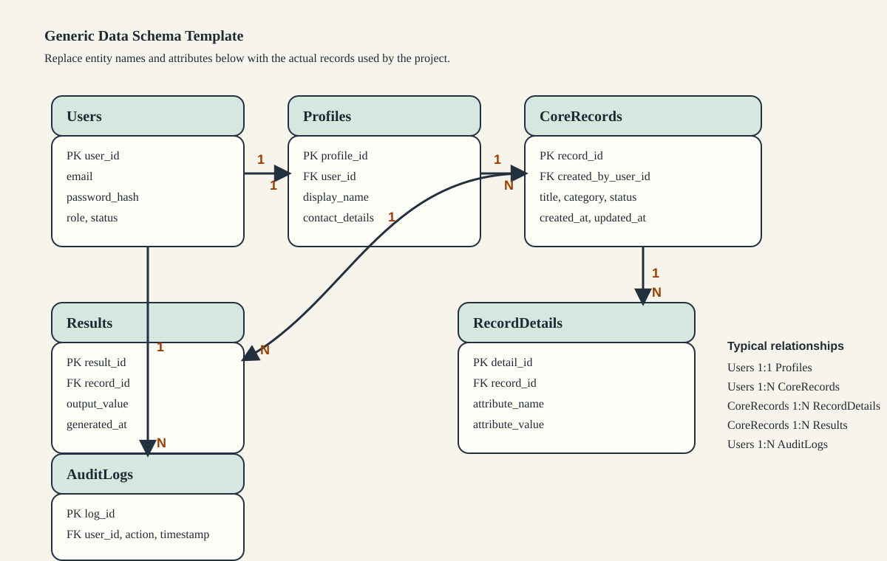

Data Schema¶
This section describes how persistent data is organized in the proposed system and how that structure supports the workflow described in the previous sections. If the project uses a relational database, this section should present the major entities, their important attributes, and the relationships that support the system's core transactions. If the project instead uses document storage, files, or other structured records, the same section may be adapted into a data structure view.
The figure below provides a reusable baseline entity relationship diagram. Replace it with the project's actual schema before final submission.

Data Design Overview¶
The data schema should identify the records that must be stored so the system can authenticate users, process transactions, retain historical data, and generate reports or outputs required by the study. At minimum, the final manuscript should show:
- The major entities, tables, or data objects used by the system
- The key attributes that affect the system logic
- The primary relationships among those entities
- The constraints or validation rules that preserve data integrity
For most BSCS projects, the stored data can be grouped into the following categories:
- User and access-control records
- Core operational or transaction records
- Reference or configuration records
- Generated outputs, logs, or archived records when these are part of the project scope
Suggested Entity Documentation¶
The final manuscript should replace the generic examples below with the actual entities used by the project.
| Entity / Table | Purpose in the System | Important Attributes | Notes on Constraints |
|---|---|---|---|
| Users | Stores account and identity information for authorized users | user_id, name, email, password_hash, role, status | Email should be unique; role should map to allowed permissions |
| Profiles or Actors | Stores additional information tied to a specific user type such as student, client, staff, or evaluator | profile_id, user_id, contact_details, assigned_unit | One profile record may depend on one user account |
| Core Records | Stores the main domain transaction handled by the system | record_id, title, category, created_at, status | Required fields and status values should be validated |
| Record Details | Stores supporting values or sub-items attached to the core record | detail_id, record_id, attribute_name, attribute_value | Often linked through a one-to-many relationship |
| Reports or Results | Stores generated outputs, summaries, recommendations, or computed results | result_id, record_id, output_value, generated_at | May be derived data and may depend on successful processing |
| Audit Logs | Stores significant system actions for traceability when logging is included in the scope | log_id, user_id, action, timestamp | Useful for monitoring, review, and security tracking |
Relationship Structure¶
The data schema should clearly show how records relate to one another. Common relationship patterns in a research system include:
1. One-to-One Relationships¶
One-to-one relationships are used when one record extends another record without duplication. For example, a user account may have one corresponding profile record that stores role-specific details.
2. One-to-Many Relationships¶
One-to-many relationships are the most common pattern in transaction-based systems. A single user may create many records, and a single core record may contain many detail rows, comments, or status updates.
3. Many-to-Many Relationships¶
Many-to-many relationships should be represented through an associative table when a record can be linked to multiple items and each item can also belong to multiple records. Examples include projects assigned to many members, records tagged with many categories, or users granted multiple permissions.
Constraints and Data Integrity¶
The manuscript should also identify the rules that keep stored data consistent and usable. Depending on the project, these constraints may include:
- Primary keys for uniquely identifying each record
- Foreign keys for maintaining valid references between entities
- Unique constraints for fields such as usernames, email addresses, or control numbers
- Required fields that prevent incomplete transactions from being stored
- Status values or enumerations that enforce valid workflow states
- Timestamps for creation, modification, approval, or archival events
If the system includes deletion or archival behavior, the final manuscript should clarify whether records are permanently deleted, soft deleted, or retained for audit purposes.
Alignment with System Workflow¶
The data schema should not be treated as a standalone database diagram. It should directly support the logic flow and architecture described earlier in Chapter 3. In most projects:
- User tables support authentication, authorization, and role-based access
- Core transaction tables support the primary workflow of the system
- Detail or junction tables support multi-step processing, assignments, or categorization
- Results tables support generated outputs, dashboards, and reports
- Logs or history tables support traceability, monitoring, or validation evidence
When writing the final version of this section, explain how the stored records move through the system from data entry to processing to output generation.
The final manuscript should make it easy to map the workflow to the stored data. For example, an input step typically creates a new core record, a validation step may reject or update submitted values, a processing step may produce detail rows or derived results, and an output step may read those saved values for dashboards, reports, or notifications.
When a Full ER Diagram Is Not Needed¶
If the approved project does not use persistent storage, this section may be revised into a lighter data structure discussion instead of a full entity relationship diagram. In that case, describe:
- The main data objects handled in memory or in files
- The format of those objects such as JSON, CSV, or model input structures
- The rules that govern how those objects are validated and transformed
- How those data structures support the system's main workflow
The final content should still make clear how the project organizes information needed by the application.
Final Customization Notes¶
Before final submission, revise this section so it matches the actual project by replacing the generic placeholders with:
- The actual entity or table names
- The actual attributes used by the project
- The actual relationships and cardinalities
- The actual constraints relevant to the implementation
- A short explanation of how the schema supports the system features and validation activities
If the project includes analytics, scoring, scheduling, recommendation, or machine learning outputs, the schema should identify where the input data, derived values, and final results are stored.